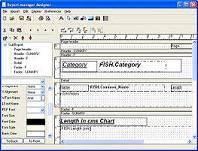
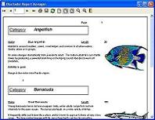

| Report manager is a reporting application (Report Manager Designer) and also a set of components for Delphi , Builder and Kylix, also supports development enviroment accepting ActiveX controls (Visual Basic,Visual FoxPro,any Visual Studio.Net language...) |  |
|
It also includes a TCP enabled Report Server so thin clients can obtain reports processed in the server. Also a fully functional web report server application is available.A true net and web report server with no license fees. |
 |
Report Manager is opensource under the MPL license model, (including a GPL allowed use clause) so you can use it in your commercial software but any enhacements to the engine must be published
It works in Windows and Linux, You can distribute the report designer, so you modify the reports without modifying your application, the result can be exported to Adobe PDF format.
Report Manager has many features, including exclusive ones like single page subreports ,metafile report ,use device fonts, external sections and child subreports.
If you are using Delphi/Kylix/Builder, you can include the reporting engine in your executables, it adds just 90K, that includes the preview window, complete print dialog, report options dialog...
Current version is 1.3 supporting Delphi 5E,Delphi 6PE, Delphi 7PE, Kylix 2OPE, Kylix 3PE (C++ and Delphi), Builder 4E,and ActiveX, but it should compile also with Kylix 1PE, Builder 5E, Builder 6PE, and Delphi 4E..., it's reported to work with Kylix Open Editions and FreeCLX.
All features planned for major version 1 are implemented including barcodes and charts.
Next minor (1.4) version can have some new features.
For a detailed description see the feature list.
Visit also the useful Documentation and F.A.Q.